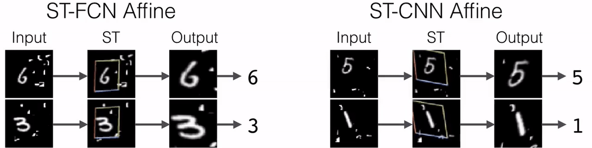
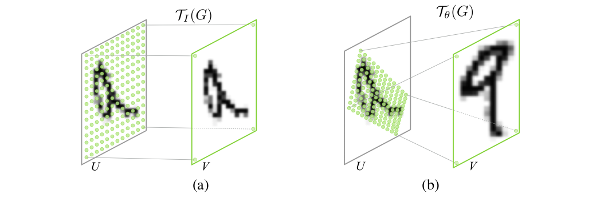
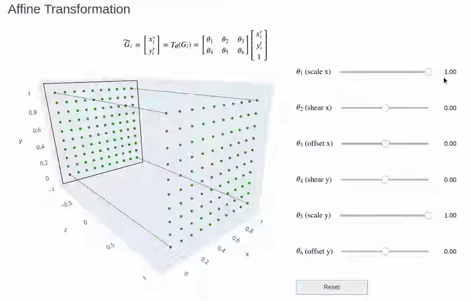
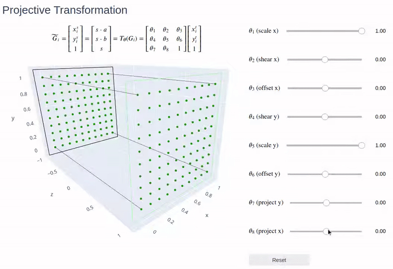
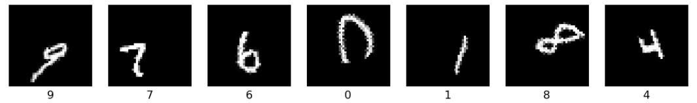
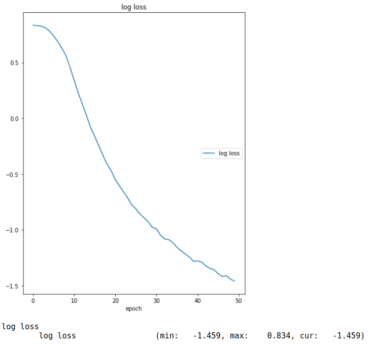
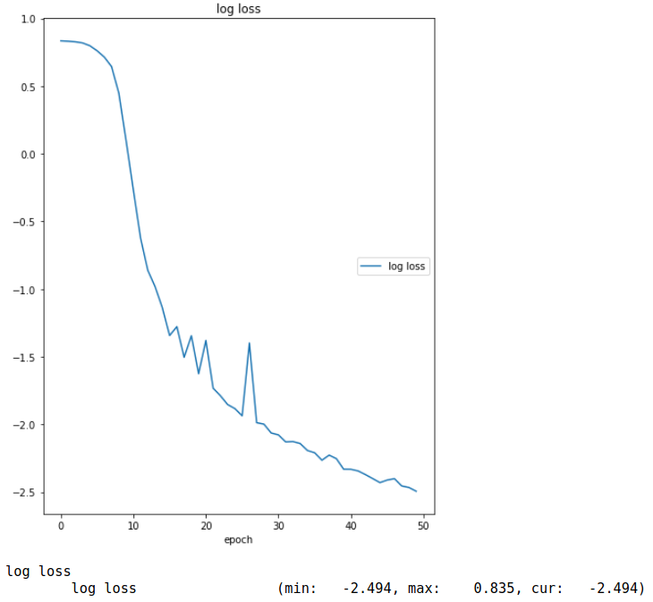
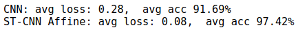

Jaderberg et al. (2015) introduced the learnable Spatial Transformer (ST) module that can be used to empower standard neural networks to actively spatially transform feature maps or input data. In essence, the ST can be understood as a black box that applies some spatial transformation (e.g., crop, scale, rotate) to a given input (or part of it) conditioned on the particular input during a single forward path. In general, STs can also be seen as a learnable attention mechanism (including spatial transformation on the region of interest). Notably, STs can be easily integrated in existing neural network architectures without any supervision or modification to the optimization, i.e., STs are differentiable plug-in modules. The authors could show that STs help the models to learn invariances to translation, scale, rotation and more generic warping which resulted in state-of-the-art performance on several benchmarks, see image below.

ST Example: Results (after training) of using a ST as the first layer of a fully-connected network (ST-FCN Affine, left) or a convolutional neural network (ST-CNN Affine, right) trained for cluttered MNIST digit recognition are shown. Clearly, the output of the ST exhibits much less translation variance and attends to the digit. Taken from Jaderberg et al. (2015) linked video.
Model Description
The aim of STs is to provide neural networks with spatial transformation and attention capabilities in a reasonable and efficient way. Note that standard neural network architectures (e.g., CNNs) are limited in this regard1. Therefore, the ST constitutes parametrized transformations \(\mathcal{T}_{\boldsymbol{\theta}}\) that transform the regular input grid to a new sampling grid, see image below. Then, some form of interpolation is used to compute the pixel values in the new sampling grid (i.e., interpolation between values of the old grid).

Two examples of applying the parametrised sampling grid to an image \(\textbf{U}\) producing the output \(\textbf{V}\). The green dots represent the new sampling grid which is obtained by transforming the regular grid \(\textbf{G}\) (defined on \(\textbf{V}\)) using the transformation \(\mathcal{T}\). (a) The sampling grid is the regular grid \(\textbf{G} = \mathcal{T}_{\textbf{I}} (\textbf{G})\), where \(\textbf{I}\) is the identity transformation matrix. (b) The sampling grid is the result of warping the regular grid with an affine transformation \(\mathcal{T}_{\boldsymbol{\theta}} (\textbf{G})\). Taken from Jaderberg et al. (2015).
To this end, the ST is divided into three consecutive parts:
Localisation Network: Its purpose is to retrieve the parameters \(\boldsymbol{\theta}\) of the spatial transformation \(\mathcal{T}_{\boldsymbol{\theta}}\) taking the current feature map \(\textbf{U}\) as input, i.e., \(\boldsymbol{\theta} = f_{\text{loc}}
\left(\textbf{U} \right)\). Thereby, the spatial transformation is conditioned on the input. Note that dimensionality of \(\boldsymbol{\theta}\) depends on the transformation type which needs to be defined beforehand, see some examples below. Furthermore, the localisation network can take any differentiable form, e.g., a CNN or FCN.
Examples of Spatial Transformations
The following examples highlight how a regular grid
defined on the output/target map \(\textbf{V}\) (i.e., \(H^t\) and \(W^t\) denote height and width of \(\textbf{V}\)) can be transformed into a new sampling grid
defined on the input/source feature map \(\textbf{U}\) using a parametrized transformation \(\mathcal{T}_{\boldsymbol{\theta}}\), i.e., \(\widetilde{G} =
T_{\boldsymbol{\theta}} (G)\). Visualizations have bee created by me, interactive versions can be found here.

This transformation allows cropping, translation, rotation, scale and skew to be applied to the input feature map. It has 6 degrees of freedom (DoF).
This transformation is more constrained with only 3-DoF. Therefore it only allows cropping, translation and isotropic scaling to be applied to the input feature map.

This transformation has 8-DoF and can be seen as an extension to the affine transformation. The main difference is that affine transformations are constrained to preserve parallelism.
Grid Generator: Its purpose to create the new sampling grid \(\widetilde{\textbf{G}}\) on the input feature map \(\textbf{U}\) by applying the predefined parametrized transformation using the parameters \(\boldsymbol{\theta}\) obtained from the localisation network, see examples above.
Sampler: Its purpose is to compute the warped version of the input feature map \(\textbf{U}\) by computing the pixel values in the new sampling grid \(\widetilde{\textbf{G}}\) obtained from the grid generator. Note that the new sampling grid does not necessarily align with the input feature map grid, therefore some kind of interpolation is needed. Jaderberg et al. (2015) formulate this interpolation as the application of a sampling kernel centered at a particular location in the input feature map, i.e.,
where \(V_i^c \in \mathbb{R}^{W^t \times H^t}\) denotes the new pixel value of the \(c\)-th channel at the \(i\)-th position of the new sampling grid coordinates2\(\begin{bmatrix} x_i^s &
y_i^s\end{bmatrix}^{T}\) and \(\boldsymbol{\Phi}_x,
\boldsymbol{\Phi}_y\) are the parameters of a generic sampling kernel \(k()\) which defines the image interpolation. As the sampling grid coordinates are not channel-dependent, each channel is transformed in the same way resulting in spatial consistency between channels. Note that although in theory we need to sum over all input locations, in practice we can ignore this sum by just looking at the kernel support region for each \(V_i^c\) (similar to CNNs).
The sampling kernel can be chosen freely as long as (sub-)gradients can be defined with respect to \(x_i^s\) and \(y_i^s\). Some possible choices are shown below.
Motivation: With the introduction of GPUs, convolutional layers enabled computationally efficient training of feature detectors on patches due to their weight sharing and local connectivity concepts. Since then, CNNs have proven to be the most powerful framework when it comes to computer vision tasks such as image classification or segmentation.
Despite their success, Jaderberg et al. (2015) note that CNNs are still lacking mechanisms to be spatially invariant to the input data in a computationally and parameter efficient manner. While convolutional layers are translation-equivariant to the input data and the use of max-pooling layers has helped to allow the network to be somewhat spatially invariant to the position of features, this invariance is limited to the (typically) small spatial support of max-pooling (e.g., \(2\times 2\)). As a result, CNNs are typically not invariant to larger transformations, thus need to learn complicated functions to approximate these invariances.
What if we could enable the network to learn transformations of the input data? This is the main idea of STs! Learning spatial invariances is much easier when you have spatial transformation capabilities. The second aim of STs is to be computationally and parameter efficient. This is done by using structured, parameterized transformations which can be seen as a weight sharing scheme.
Implementation
Jaderberg et al. (2015) performed several supervised learning tasks (distorted MNIST, Street View House Numbers, fine-grained bird classification) to test the performance of a standard architecture (FCN or CNN) against an architecture that includes one or several ST modules. They could emperically validate that including STs results in performance gains, i.e., higher accuracies across multiple tasks.
The following reimplementation aims to reproduce a subset of the distored MNIST experiment (RTS distorted MNIST) comparing a standard CNN with a ST-CNN architecture. A starting point for the implementation was this pytorch tutorial by Ghassen Hamrouni.
RTS Distorted MNIST
While Jaderberg et al. (2015) explored multiple distortions on the MNIST handwriting dataset, this reimplementation focuses on the rotation-translation-scale (RTS) distorted MNIST, see image below. As described in appendix A.4 of Jaderberg et al. (2015) this dataset can easily be generated by augmenting the standard MNIST dataset as follows: * randomly rotate by sampling the angle uniformly in \([+45^{\circ}, 45^{\circ}]\), * randomly scale by sampling the factor uniformly in \([0.7, 1.2]\), * translate by picking a random location on a \(42\times 42\) image (MNIST digits are \(28 \times 28\)).

RTS Distorted MNIST Examples
Note that this transformation could also be used as a data augmentation technique, as the resulting images remain (mostly) valid digit representations (humans could still assign correct labels).
The code below can be used to create this dataset:
The model implementation can be divided into three tasks:
Network Architectures: The network architectures are based upon the description in appendix A.4 of Jaderberg et al. (2015). Note that there is only one ST at the beginning of the network such that the resulting transformation is only applied over one channel (input channel). For the sake of simplicity, we only implement an affine transformation matrix. Clearly, including an ST increases the networks capacity due to the number of added trainable parameters. To allow for a fair comparison, we therefore increase the capacity of the convolutional and linear layers in the standard CNN.
The code below creates both architectures and counts their trainable parameters.
Training Procedure: As described in appendix A.4 of Jaderberg et al. (2015), the networks are trained with standard SGD, batch size of \(256\) and base learning rate of \(0.01\). To reduce computation time, the number of epochs is limited to \(50\).
The loss function is the multinomial cross entropy loss, i.e.,
where \(k\) enumerates the number of classes, \(i\) enumerates the number of images, \(p_i^{(k)} \in \{0, 1\}\) denotes the true probability of image \(i\) and class \(k\) and \(\widehat{p}_i^{(k)} \in [0, 1]\) is the probability predicted by the network. Note that the true probability distribution is categorical (hard labels), i.e.,
which is the definition of the negative log likelihood loss (NLLLoss) in Pytorch, when the logarithmized predictions \(\log \left(
\widehat{p}_{i, y_i} \right)\) (matrix of size \(N\times C\)) and class labels \(y_i\) (vector of size \(N\)) are given as input.
The code below summarizes the whole training procedure.
Lastly, the results can also divided into three sections:
Training Results: Firstly, we train our models on the training dataset and compare the logarithmized losses:
Code
trained_cnn = train(cnn, train_dataset)

Training Results CNN
Code
trained_st_cnn = train(st_cnn, train_dataset)

Training Results ST-CNN
The logarithmized losses already indicate that the ST-CNN performs better than the standard CNN (at least, it decreases the loss faster). However, it can also be noted that training the ST-CNN seems less stable.
Test Performance: While the performance on the training dataset may be a good indicator, test set performance is much more meaningful. Let’s compare the losses and accuracies between both trained models:
Code
for trained_model in [trained_cnn, trained_st_cnn]: test(trained_model, test_dataset)

Test Results
Clearly, the ST-CNN performs much better than the standard CNN. Note that training for more epochs would probably result in even better accuracies in both models.
Visualization of Learned Transformations: Lastly, it might be interesting to see what the ST module actually does after training:
Clearly, the ST module attends to the digits such that the ST output has much less variation in terms of rotation, translation and scale making the classification task for the follow up CNN easier.
Pretty cool, hugh?
Footnotes
Clearly, convolutional layers are not rotation or scale invariant. Even the translation-equivariance property does not necessarily make CNNs translation-invariant as typically some fully connected layers are added at the end. Max-pooling layers can introduce some translation invariance, however are limited by their size such that often large translation are not captured.↩︎
Jaderberg et al. (2015) define the transformation with normalized coordinates, i.e., \(-1
\le x_i^s, y_i^s \le 1\). However, in the sampling kernel equations it seems more likely that they assume unnormalized/absolute coordinates, e.g., in equation 4 of the paper normalized coordinates would be nonsensical.↩︎